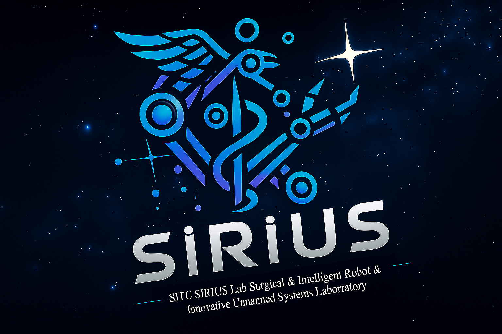
SIRIUS Lab - Surgical & Intelligent Robot & Innovative Unmanned Systems Laboratory
SIRIUS Lab focuses on the intersection of artificial intelligence, robotics, and surgical data science. We design learning-enabled robotic algorithms and platforms to understand the surgical scene, plan dexterous manipulation, and provide real-time autonomous assistance. Our mission is to make surgery safer, more precise, and universally accessible while uncovering new insights into human–machine collaboration in the operating room.
News
- [03/2025] We are co-orginizing COLAS workshop at MICCAI 2025!
- [03/2025] One paper was accepted at IEEE ISBI 2025!
- [02/2025] One paper was accepted at ICRA 2025!
- [05/2024] One paper was accepted at ICML 2024!
- [05/2024] One paper was accepted at ICRA 2024!
- [05/2024] One paper was accepted at Machine Learning.
- [07/2023] One paper was accepted at IEEE TMI!
- [01/2023] One paper was accepted at Surgical Endoscopy!
- [01/2022] One paper was accepted at IEEE TPAMI!
Research ( show selected / show all by date / show all by topic )
Surgical AI /
Robot Perception /
Robotic Learning
(* / †: indicates equal contribution.)
(* / †: indicates equal contribution.)
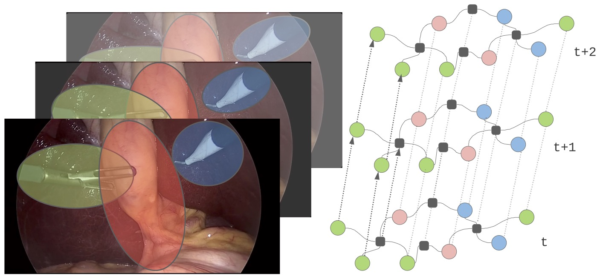

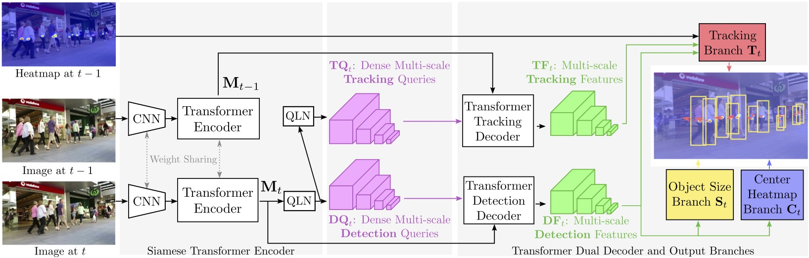
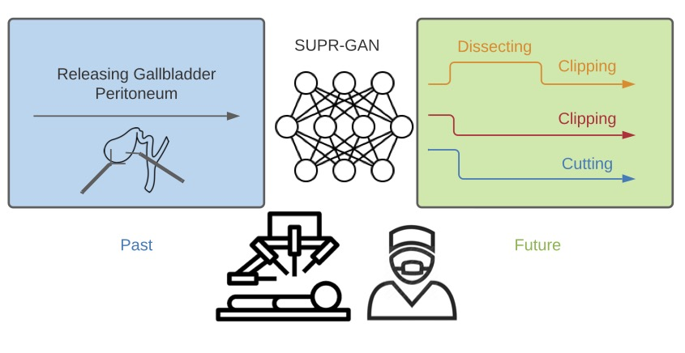
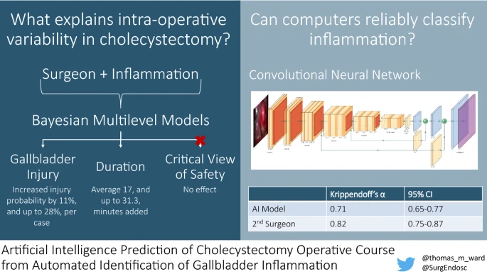

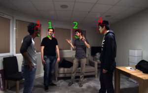
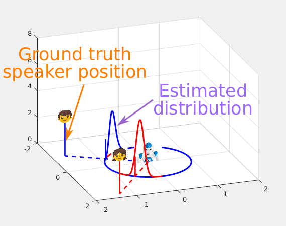
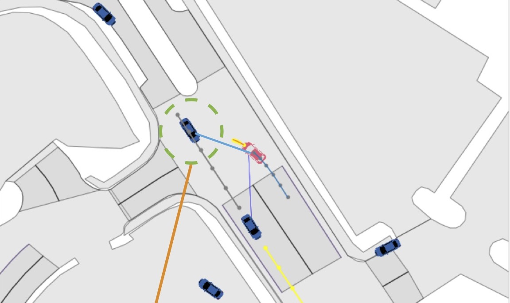

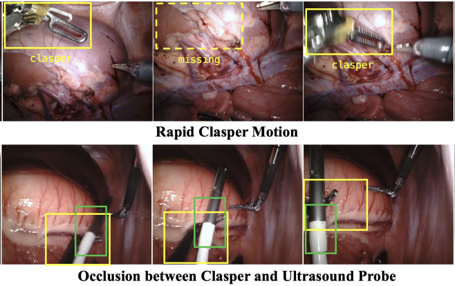
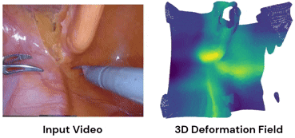
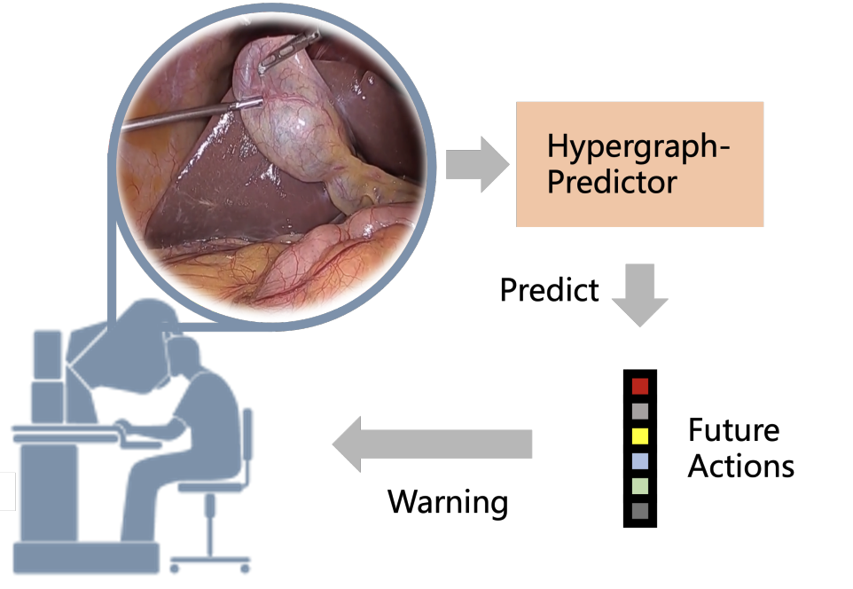

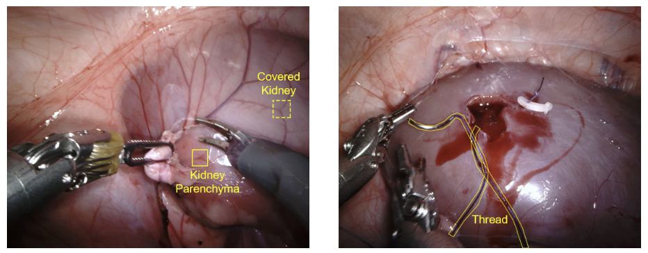